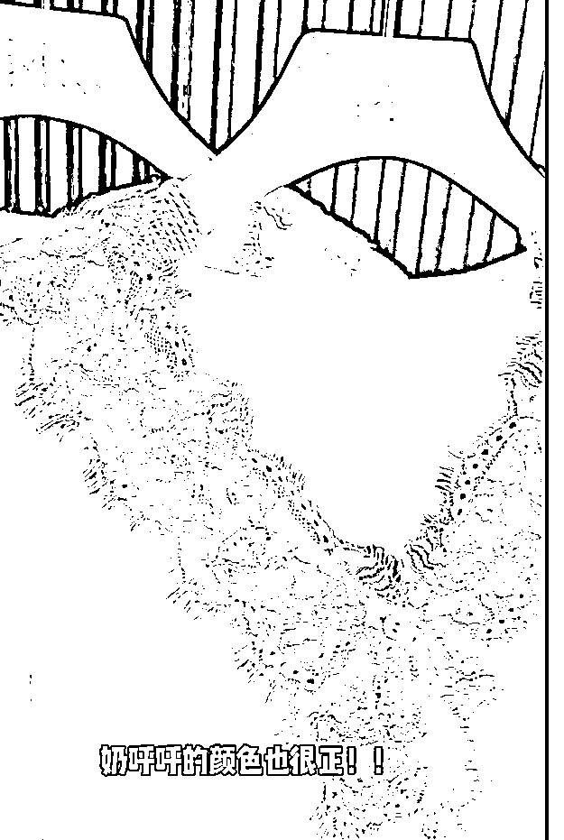
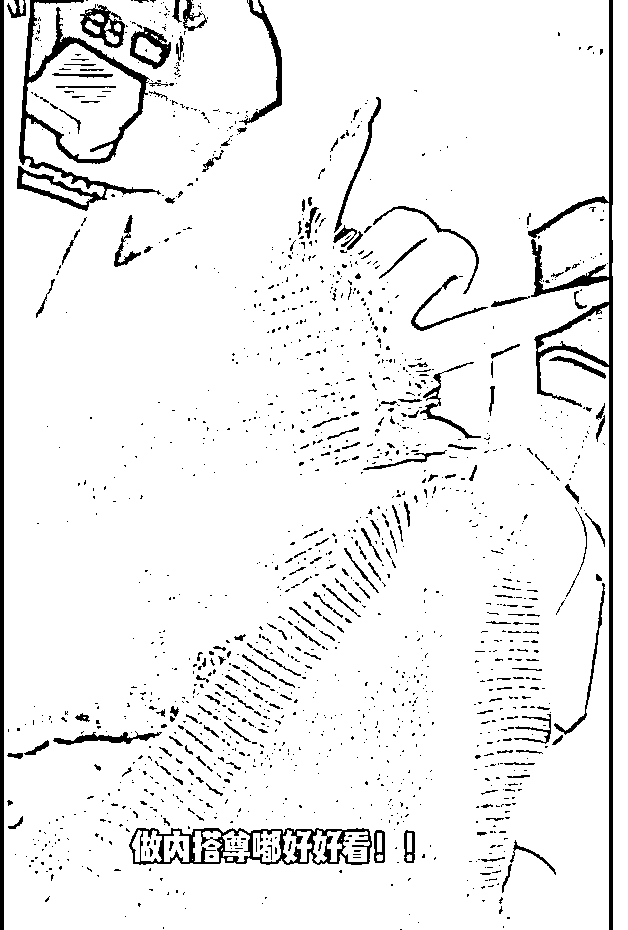
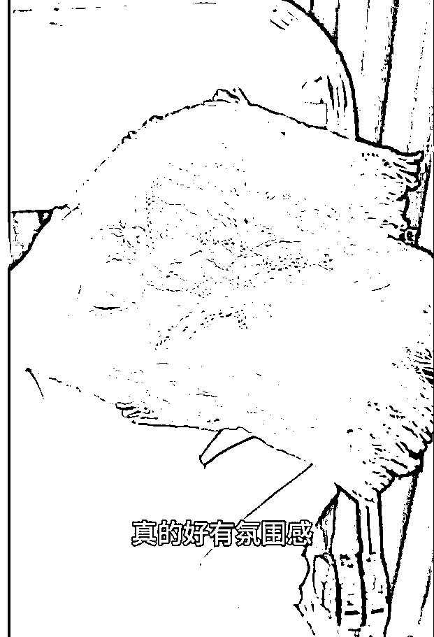

来源：https://ba9gvofzgow.feishu.cn/docx/LntKdvQ7noyHmcxHDgpc87Cln8f
大家好，我是林幻雨，这次我要拆解的主题为小红书爆款，售卖件数50W+的店。
因为我对小红书不是特别的熟悉，对于数据分析软件也不是很熟，所以只能手动刷，刷了两天找到了一家穿搭店铺，单品售卖6W+。
感觉很适合去学习模仿，于是进行了拆解~
第一次拆解，有很多不足之处，欢迎大家指导评论！
以下为本次拆解的内容：
接下来我会以账号 “ KK穿搭分享 ” 为例，为大家进行拆解。
账号：KK穿搭分享
账号人设：实体店店主
类目：穿搭分享类
带货形式：纯笔记带货，本人不出境。笔记内容以视频+图文形式混合
商品特点：百元内、韩系、新中系、时尚
为什么要拆解这个账号：
1.该账号笔记形式简单，好上手，可以无货源。
2.以下为账号基础信息。一个单品售卖6W+件，引起了我的好奇。于是决定去研究一下这个单件是如何爆的。
接下来，我将会从该件单品从第一次笔记开始进行分析。
下方商品分析为2023.9.1到2023.10.10的关于该品的所有笔记数据。
第一次发布的时候，只展示了衣服的材质视频，配了一个简单的BGM。
笔记数据：喜欢805；收藏390；评论104
笔记链接：http://xhslink.com/W2HLSA
文案也非常简单：妈耶!!40几挖到内搭单穿都好看的蕾丝打底衫
标签就挂的非常多了：#针织上衣 #舒服针织衫这么撘 #针织衫 #百搭打底衫#秋季穿搭 #日常穿搭 #内撘 #平价好穿针织衫 #軟糯针织衫 #打底衫 #显痩打底衫推荐 #秋冬打底衫 #价打底衫推荐 #毛衣#秋冬毛衣 #软糯毛衣 #内撘 #内搭推荐 #冬季内搭参考 #来自针织衫的温柔 #秋冬内撘 #冬季穿撘#日常穿撘 #穿撘 #秋冬穿撘 #小红书礼物季 #仪式感穿搭 #圣诞礼物季 #这个冬天保暖又好看
封面+内容：
评论区可以看到很多人其实是在问外面的开衫，因为这两件搭配起来确实很好看。
第二次发布的时候，与上一条相比只换了一个BGM，其他都一模一样。
笔记数据：喜欢312；收藏112；评论55
笔记链接：http://xhslink.com/UXqNSA
文案变化：从 “内搭单穿都好看的蕾丝打底衫” 变成 “超理想的蕾丝毛衣~好温柔!!”
标签也发生了变化：#小红书时尚秋上新 #毛衣 #秋冬毛衣 #针织衫 #早秋必备针织衫 #打底衫 #百撘打底衫 #显痩打底衫推荐 #长袖打底衫 #秋季穿搭 #秋冬穿搭 #秋天穿什么 #今天穿什么 #商品笔记扶苗计划
不知道为什么和昨天的相比标签少了很多。但是从APP上可以看到第一条笔记是在2023.12.22日进行了修改，不难看出，应该是修改了标签。
评论区可以看到很多人还是在问外面的开衫，这其实就是一个异常值，只要能找到外面便宜且质量好的开衫，我认为也会是一个能爆的品。
注意了。与此同时，作者发了第二条同款的视频。但是换了封面和内容，并且在视频中加了描述的字幕：“仿佛开了柔光滤镜”、“眞的好喜欢这件蕾丝毛衣~”、“软软呯呼的触感，不会扎哟~” 【这一句是因为评论区经常有人问扎不扎】、“单穿也不怕透，发啦爱啦!!”【这一句是因为评论区有人问透不透】
笔记数据：喜欢211；收藏69；评论34
笔记链接：http://xhslink.com/awcQSA
文案进行了精心的描写：
哇哇!!终于找到了想要的毛衣 很软乎不扎没有哪个女生能抗拒这么奶呼呼的蕾丝毛衣叭!!软糯又轻盈的面料~敏感肌也不会觉得扎就是柔软舒服的存在呀!单穿 做内搭都可以 不会透~怎么自在怎么舒服怎么穿
标签：#小红书时尚秋上新 #毛衣 #秋冬毛衣 #针织衫 #早秋必备针织衫 #打底衫 #百撘打底衫 #显痩打底衫推荐 #长袖打底衫 #秋季穿搭 #秋冬穿搭 #秋天穿什么 #今天穿什么 #商品笔记扶苗计划
此处标签和上面的是相同的，说明最开始店主没有太进行标签的优化。后面可能学习了某些小红书店铺SEO教程以后对标签进行了优化。
封面+内容：
这个时候出现了一个状况：这个笔记没有流量了，流量越来越不好
店主进行了一个操作，暂停发这一款的笔记。
一直到2023.9.22日流量稍微好一点了。再次发布了这一款的笔记。
具体情况不清楚，但是我猜测是这个时候开始给他前面那三条笔记推流了。
笔记数据：喜欢541；收藏210；评论26
笔记链接：http://xhslink.com/UXqNSA
文案：妈耶才40几!这件蕾丝毛衣做打底一整个爱住。这件糯糯叽叽的蕾丝毛衣，做打底穿简直不要太好看啦
标签也发生了变化：#秋季穿撘#日常穿撘 #毛衣 #秋冬毛衣 #穿撘 #穿撘#气质穿撘 #打底衫 #百撘打底衫 #秋冬打底衫 #显痩打底衫推荐 #针织打底衫 #平价打底衫推荐 #显痩打底衫 #针织衫 #针织衫穿撘 #舒服针织衫这么撘 #旱秋必备针织衫 #平价好穿针织衫 #初秋针织衫穿撘 #秋天穿什么 #今天穿什么 #今天穿什么香
这款笔记将标签进行了一定程度的优化。
视频内容是配了BGM+更换了字幕：“温柔到骨子里~”、“眞的好爱这件蕾丝打底衫”、“手感一整个糯糯叽叽”、“不扎喔~而且是不易起球的那种”【这条是评论有问起不起球】、“看我把手伸进去，也不会透”【对于透不透的回答】、“眞的爱了爱了!!”【多使用这种情绪词更容易引起女性共鸣】
封面+内容：
该笔记是在2023.9.24
笔记数据：喜欢1.1W；收藏4305；评论603
笔记链接：http://xhslink.com/b8NSSA
文案：妈耶~才40几挖到件好温柔的蕾丝打底衫啊
标签进行了优化：#针织上衣 #舒服针织衫这么撘 #针织衫 #气质穿撘 #百搭打底衫 #秋季穿撘 #日常穿撘 #內撘 #平价好穿针织衫 #曱秋针织衫 #软糯针织衫 #打底衫 #显痩打底衫推荐 #秋冬打底衫 #平价打底衫推荐 #冬季穿撘 #圣诞在小红书买什么 #圣诞礼物季 #小红书礼物季 #这个冬天保暖又好看 #日常穿搭 #梨形身材裤子#潦草冬日穿搭
从数据上来看，应该是9.22的笔记流量起来了，所以又发了一个该款视频
封面采用了新封面，视频内容为简单BGM+实拍摸衣服
这篇笔记大爆了以后进行了置顶操作，里面会有一些返图分享，猜测是和买家进行了私信沟通~
封面+内容：

并且使用了新的封面，使用了搭配的方式：
笔记数据：喜欢2397；收藏841；评论172
笔记链接：http://xhslink.com/ccfXSA
文案：不得不说!这么温柔的打底衫好有氛围感啊
标签也发生了变化：#今天穿什么香 #笔记灵感 #针织上衣 #舒服针织衫这么撘 #针织衫 #气质穿撘 #百撘打底衫 #秋季穿撘 #日常穿撘 #內撘 #平价好穿针织衫 #軟糯针织衫 #打底衫 #显痩打底衫推荐 #秋冬打底衫 #平价打底衫推荐#温柔穿撘 #韩系穿撘 #慵懶感穿撘 #松弛感穿撘 #不露腿穿撘 #氛围感穿撘 #秋冬穿撘 #冬季穿撘 #元旦购物清单 #在小红书种出好生意 #24年心愿单
视频内容是配了BGM+剪映配音+字幕：“好温柔的氛围感穿搭啊”、“杏色蕾丝花边打底衫”、“显瘦的大V领”、“下摆是这种收紧的效果”、“细腻的针织软到骨子里了”、“不用担心，蕾丝花边一点都不会扎肉”【回答评论区扎不扎】、“再搭配这件浅色阔腿裤”、“裤腰里面全部进包边”、“满满的舒适感”、“爱了爱了”
因为商品链接还是挂的这一款内搭，所以评论区很多都在问裤子链接。
封面+内容：
笔记数据：喜欢537；收藏164；评论61
笔记链接：http://xhslink.com/yJVYSA
文案：妈耶~这件才40几的蕾丝毛衣一整个仙住了
标签也发生了变化：#小红书时尚秋上新 #针织上衣 #舒服针织衫这么搭 #针织衫 #气质穿撘 #百撘打底衫 #秋季穿撘 #日常穿撘#内搭 #平价好穿针织衫 #早秋针织衫 #软糯针织衫 #打底衫 #显痩打底衫推荐 #秋冬打底衫 #平价打底衫推荐 #秋天穿什么 #早秋穿什么 #毛衣 #来自针织衫的温柔
视频内容回到最开始的最简单版本，只配了BGM，但是流量似乎也很不错。
封面+内容：

笔记数据：喜欢504；收藏156；评论46
笔记链接：http://xhslink.com/W4SZSA
文案：妈耶~自带柔光滤镜般的蕾丝毛衣 太好穿了吧。谁懂啊!秋冬真的好喜欢这种软糯糯的毛衣内搭外穿都好看~不扎人 软乎乎~杏色真的是又温柔又显白~
标签也发生了变化：#小红书时尚秋上新 #针织上衣 #舒服针织衫这么搭 #针织衫 #气质穿撘 #百撘打底衫 #秋季穿撘 #日常穿撘#内搭 #平价好穿针织衫 #早秋针织衫 #软糯针织衫 #打底衫 #显痩打底衫推荐 #秋冬打底衫 #平价打底衫推荐 #秋天穿什么 #早秋穿什么 #毛衣 #来自针织衫的温柔#双十一买买节 #秋-下就降温 #时髦精捡漏计划 #时尚主理人 #时尚主理人的秋日穿搭
视频内容为：BGM+本人说话+字幕：“这件蕾丝打底衫好温柔啊”、“蕾丝的质感很好也不会扎肉”、“是这种很细腻的针织”、“软软糯糯的穿在身上很舒服”、“内搭或者外穿都很不错”
封面+内容：

笔记数据：喜欢147；收藏46；评论12
笔记链接：http://xhslink.com/Jms1SA
文案：呜呜~自带氛围感 被这件蕾丝打底衫拿捏了
标签：#今天穿什么香 #笔记灵感 #小红书时尚秋上新 #针织上衣 #舒服针织衫这么撘 #针织衫 #气质穿撘 #百搭打底衫 #秋季穿撘 #日常穿撘 #內撘 #平价好穿针织衫 #早秋针织衫 #软糯针织衫 #打底衫 #显痩打底衫推荐 #秋冬打底衫 #平价打底衫推荐 #秋天穿什么 #早秋穿什么 #商品笔记扶苗计划 #双十一买买节 #秋一下就降温#时髦精捡漏计划 #时尚主理人 #时尚主理人的秋日穿搭
视频内容为：BGM+剪映配音+字幕：“早秋的不露腿氛围感穿搭”、“白色蕾丝打底衫”、“好美的蕾丝花边”、“一点都不会扎肉”、“下摆是这种收紧的效果”、“很显腰身”、“看这糯叽叽的质感”、“谁能不心动”、“回弹也很好”、“不用担心变形”、“上身真的很温柔”、“搭配件深灰色糯米裤”、“这里还做了褶皱设计”、“是很遮胯显瘦的版型”、“上身一整个显高显瘦”、“爱了爱了”
这一篇笔记中评论区都是询问裤子链接的，和之前那一条搭配的笔记是一样的。
封面+内容：
笔记数据：喜欢147；收藏46；评论12
笔记链接：http://xhslink.com/cDw2SA
文案：妈耶!自带温柔滤镜的蕾丝毛衣真的太好穿啦。我的妈呀，摸起来软的一塌糊涂的蕾丝毛衣这一件太好看了!软糯糯的，整个人气场都温柔了!!!
标签：#小红书时尚秋上新 #针织上衣 #舒服针织衫这么搭 #针织衫 #气质穿撘 #百撘打底衫 #秋季穿撘 #日常穿撘#内搭 #平价好穿针织衫 #早秋针织衫 #软糯针织衫 #打底衫 #显痩打底衫推荐 #秋冬打底衫 #平价打底衫推荐 #秋天穿什么 #早秋穿什么 #毛衣 #来自针织衫的温柔#双十一买买节 #秋-下就降温 #时髦精捡漏计划 #时尚主理人 #时尚主理人的秋日穿搭
视频内容为：简单BGM+摸衣服展示细节视频【这部分之前的笔记都发过一模一样的，只是换了BGM】
这一篇笔记中评论区有几个都是在询问裤子链接的。开始有人询问，【能不能上身穿一下，每个视频都是在摸摸摸】，店主回答，【上身可以参考视频左下角链接，其他姐妹的晒图】。
我猜测店主可能是做的无货源模式。
封面+内容：
笔记数据：喜欢240；收藏91；评论16
笔记链接：http://xhslink.com/QZD3SA
文案：好看耶~才40几真的好爱这件蕾丝针织衫。温柔到骨子里的蕾丝针织衫，做内搭外穿都好好看
标签：#小红书时尚秋上新 #针织上衣 #舒服针织衫这么搭 #针织衫 #气质穿撘 #百撘打底衫 #秋季穿撘 #日常穿撘 #內撘 #平价好穿针织衫 #旱秋针织衫 #軟糯针织衫 #打底衫 #显痩打底衫推荐 #秋冬打底衫 #平价打底衫推荐 #秋天穿什么 #早秋穿什么 #毛衣 #来自针织衫的温柔#双十一买买节 #秋-下就降温 #时髦精捡漏计划 #时尚主理人 #时尚主理人的秋日穿搭
视频内容为：简单BGM+摸衣服展示细节视频【视频是新的实拍视频】
采用了最开始流量跑起来的封面，和价格前置的标题【40几】，并且在评论区进行参与惊喜盒子活动。
封面+内容：

笔记数据：喜欢2076；收藏586；评论54
笔记链接：http://xhslink.com/z7t4SA
文案：49.9-运费险!挖到敲温柔的蕾丝针织衫~温温柔柔的蕾丝针织衫真的太喜欢啦~软软的贴身穿不扎!单穿或者做内搭打底衫都很合适
标签进行了进一步的优化：#针织上衣 #舒服针织衫这么撘 #针织衫 #气质穿撘 #百撘打底衫 #秋季穿撘#日常穿搭 #內撘 #平价好穿针织衫 #软糯针织衫 #打底衫 #显痩打底衫推荐 #秋冬打底衫 #平价打底衫推荐#秋冬穿撘 #冬季穿撘 #圣诞在小红书买什么 #圣诞礼物季 #小红书礼物季 #这个冬天保暖又好看 #日常穿搭#梨形身材裤子#潦草冬日穿搭
视频内容为：简单BGM+摸衣服展示细节视频【视频是新的实拍视频】
采用了9.24爆款笔记的封面，和价格前置的标题【49.9+运费险】（因为在上一条笔记中，有人问“你管49.9叫40几？”,所以这次店主主动将价格写清楚），并且在评论区进行参与惊喜盒子活动。
封面+内容：
下图为9.24爆款视频和这一条视频的文案区别，封面是一样的，视频内容有所区别，不过都是BGM+摸衣服，区别不是很大。10.3的视频对文案进行了一定程度的优化，但是效果不是很理想，喜欢数量才达到9.24笔记的1/6。
笔记数据：喜欢163；收藏67；评论29
笔记链接：http://xhslink.com/QQL6SA
文案：一眼温柔 单穿也很好看的蕾丝针织衫 才40几。尊的爱惨了这种柔软亲肤的手感!!比想象的还要柔软，很好穿，吹爆这件蕾丝针织衫，才40几
标签进行了进一步的优化：#小红书时尚秋上新 #针织上衣 #舒服针织衫这么撘 #针织衫 #气质穿撘 #百搭打底衫 #秋季穿撘 #日常穿撘 #內撘 #平好穿针织衫 #早秋针织衫 #软糯针织衫 #打底衫 #显痩打底衫推荐 #秋冬打底衫 #平价打底衫推荐 #秋天穿什么 #早秋穿什么 #毛衣 #来自针织衫的温柔#双十一买买节 #秋-下就降温 #时髦精捡漏计划 #时尚主理人 #时尚主理人的秋日穿搭
视频内容为：简单BGM+剪映配音+字幕+摸衣服展示细节视频【视频是新的实拍视频】
字幕：“一眼爱住的蕾丝针织衫”、“才40几主打一个秋冬慵懒氛围感”、“贴身穿轻盈柔软点都不会扎喔”、“毛绒感真的很好!风吹不透的那种”、“春秋直接一套就很温柔啦”、“冬天搭配大衣羽绒服都很好看”。
笔记数据：喜欢32；收藏18；评论4
笔记链接：http://xhslink.com/k3M6SA
文案：我天，这件蕾丝毛衣我愿称之为内搭天花板。巨巨巨温柔的蕾丝拼接毛衣，秋冬氛围感一整个拿担领口蕾丝拼接，单穿或者做内搭都美量啦，关键才40几!!
标签进行了进一步的优化：#小红书时尚秋上新 #针织上衣 #舒服针织衫这么撘 #针织衫 #气貭穿撘 #百撘打底衫 #秋季穿撘 #日常穿搭 #內撘 #平价好穿针织衫 #早秋针织衫 #软糯针织衫 #打底衫 #显痩打底衫推荐 #秋冬打底衫 #平价打底衫推荐 #秋天穿什么 #早秋穿什么 #毛衣 #来自针织衫的温柔#内搭 #內搭推荐 #秋季內搭 #秋冬内搭 #百搭內撘 #双十-买买节 #秋-下就降温 #时髦精捡漏计划 #时尚主理人 #时尚主理人的秋日穿搭
视频内容为：简单BGM+字幕+摸衣服展示细节视频【视频是新的实拍视频】
字幕：“这件v领蕾丝毛衣，给你们推荐下”、“氛围盛直接拿捏!!”、“版型眞的很不错，显腰细!”、“面料软软的好舒服~”、“不扎喔~而且单穿也不会透”、“才40几爱啦爱啦!”。
笔记数据：喜欢5368；收藏2519；评论396
笔记链接：http://xhslink.com/VgJNTA
文案：一眼沦陷啦我愿称之为内搭天花板蕾丝毛衣。一整个温柔住啦!!蕾丝毛衣做内搭尊的不要太好看啦!!
标签进行了进一步的优化：#针织上衣 #舒服针织衫这么搭 #针织衫 #气质穿撘 #百撘打底衫 #秋季穿撘 #日常穿撘 #內撘 #平价好穿针织衫 #軟糯针织衫 #打底衫 #显痩打底衫推荐 #秋冬打底衫 #平价打底衫推荐 #毛衣 #来自针织衫的温柔#內撘 #內撘推荐 #秋冬穿撘 #冬季穿撘 #元旦购物清单 #在小红书种出好生意 #24年心愿单
视频内容为：简单BGM+字幕+摸衣服展示细节视频
字幕：“姐妹们感受一下实物~，软软呯呯的质感不会让大家失望”、“袖口也是蕾丝拼接”、“收腰版型日常又显瘦”、“贴身穿牛点都不会有刺扎盛”、“才¥40几有运费险!!眞的发啦爱啦”
这也是一篇爆款笔记，我认为此处插入了一个不同的外套搭配，较之前可能就会吸引到不同的人群。在评论区可以看到，有人在求图二的橙色外套。由此可知，我们在视频中应该插入不同风格的各种搭配。
同时，这里还是用了之前的爆款封面，如下图一。
还有一个需要关注的点，就是这条笔记的视频只有11秒，比之前平均14秒的视频少了3秒，也意味着这条的完播率会比其他笔记高。视频数据好，流量就会推的更好。

笔记数据：喜欢5182；收藏1748；评论184
笔记链接：http://xhslink.com/ArrQTA
文案：温温柔柔好有氛围感软才40几的蕾丝打底衫秋冬怎么能少得了打底衫呢，这款蕾丝打底衫真的是好看又好穿!
标签进行了进一步的优化：#今天穿什么香#笔记灵感#针织上衣 #舒脹针织衫这么撘 #针织衫 #气质穿撘 #百搭打底衫 #日常穿撘 #內撘 #平好穿针织衫 #软糯针织衫 #打底衫 #显痩打底衫推荐 #秋冬打底衫 #平价打底衫推荐 #毛衣 #来自针织衫的温柔 #内搭 #内搭推荐 #秋冬穿撘 #冬季穿撘 #元旦购物清单 #在小红书种出好生意 #24年心愿单
视频内容为：简单BGM+字幕+自己说话+摸衣服展示细节视频
字幕：“袖口做的是这种很有，氛围感的蕾丝花边，而且这个蕾丝质感也是很好的”、“不用担心会扎肉”、“领口也是这种蕾丝呼应的大v字领型，很显肩颈线”、“整个给人温温柔柔的感觉”、“这种很细软的针织，穿在身上真的很舒服”、“下摆是这种收紧的效果还蛮修身的”、“冬天穿在里面搭一件”、“呢子或者棉袄都很不错”
这也是一篇爆款笔记，这里还是用了之前的爆款封面，如下图一。
还有一个需要关注的点，这条笔记的视频有29秒，比之前平均14秒的视频多了15秒，但是不像之前只是摸来摸去，仔细讲解了衣服本身，并且加入了很多比如“修身、显肩颈线、质感”等描述词，人声也会比之前更大一些，听起来能稍微舒服一点。
笔记数据：喜欢12；收藏7；评论4
笔记链接：http://xhslink.com/oIWTTA
文案：49.9!温温柔柔的蕾丝毛衣真的太美腻啦!!啊啊啊忍不住!!这件蕾丝毛衣真的好喜欢隔着屏幕都藏不住的软呼呼~好治愈!好温柔!重点是一点也不透不刺挠~才40几真的很难不爱!!
标签进行了进一步的优化：#今天穿什么香 #笔记灵感#小红书时尚秋上新 #针织上衣 #舒服针织衫这么搭 #针织衫 #气质穿撘 #百撘打底衫 #秋季穿撘 #日常穿撘#内搭 #平价好穿针织衫 #早秋针织衫 #软糯针织衫 #打底衫 #显痩打底衫推荐 #秋冬打底衫 #平价打底衫推荐 #秋天穿什么 #早秋穿什么 #毛衣 #来自针织衫的温柔#内搭 #內搭推荐 #秋季内搭 #秋冬内搭 #百搭內搭#双十-买买节 #秋-下就降温 #时髦精捡漏计划 #时尚主理人 #时尚主理人的秋日穿搭#双十- #双十一购物
视频内容为：简单BGM+字幕+摸衣服展示细节视频
字幕：“温柔到骨子里，眞的一眼万年这件蕾丝毛衣”、“衣身单穿不透哟~”、“蕾丝拼接太美腻啦~”、“整个给人温温柔柔的感觉”、“奶呯呯的颜色也很正!!”、“做内搭算嘟好好看!!”
这是一篇探索笔记，封面不行，内容也回归到之前的傻傻的摸衣服，没有解说没有不同点。光靠标题吸引不到人。


笔记数据：喜欢833；收藏345；评论85
笔记链接：http://xhslink.com/tf4UTA
文案：秋冬的氛围感穿搭 这件蕾丝针织衫也太美了哇哦~这件蕾丝针织衫也太温柔了，是那种很细软的针织特别舒服~
标签进行了进一步的优化：#针织上衣 #舒服针织衫这么搭 #针织衫#百搭打库衫 #季字撼 #口常字撼 #内搭 #亚价好字
视频内容为：简单BGM+字幕+自己说话+摸衣服展示细节视频
字幕：“这件蕾丝针织的打底衫”、“真的好有氛围感”、“很温柔的感觉”、“蕾丝的质地是很好的”、“不是扎肉的那种”、“整个大v型的领回也是布满了这种蕾丝”、“真的很漂亮”、“近看一下这个针织”、“就那种很细腻很有毛流感”、“整个抓在手上”、“是这种特别特别轻柔的感觉”、“这种松松软软的上身穿特别舒服”、“秋冬作为打底的话再适合不过了”、“它这个针脚是很密实的”、“你看我手放进去，它也是不会感觉到透的”
这也是一篇小爆的爆款笔记，这里还是用了之前的爆款封面，如下图一。
还有一个需要关注的点，这条笔记的视频有28秒，和之前那个爆款笔记是一样的，视频是一样的，只是稍微改变了一下自己的描述，笔记依然数据很好。

笔记数据：喜欢1340；收藏436；评论150
笔记链接：http://xhslink.com/Vi7WTA
文案：主打一个舒适感轮软乎乎好美腻的蕾丝针织衫基础又不简单的针织衫太好穿了，质感是那种细腻柔转的那种，版型也很好搭衣服
标签进行了进一步的优化：#针织上衣 #舒服针织衫这么撘 #针织衫 #靣撘打底衫 #秋季穿撘 #日常穿撘 #内搭 #平价好穿针织衫 #軟糯针织衫 #打底衫 #显痩打底衫推荐 #秋冬打底衫 #平价打底衫推荐 #毛衣#秋冬毛衣 #软糯毛衣 #內撘 #內搭推荐 #冬季内搭参考#来自针织衫的温柔 #秋冬内搭 #冬季穿搭#日常穿搭#穿撘 #秋冬穿撘 #小红书礼物季 #仪式感穿撘 #圣诞礼物季 #这个冬天保暖又好看
视频内容为：简单BGM+字幕+剪映语音+摸衣服展示细节视频
字幕：“这么温柔的慵懒感穿搭好戳我”、“蕾丝打底衫也太美了吧”、“整个衣身的质感都不用我说，太细腻啦”、“穿一整个冬天没问题”、“再搭件巨遮腿型的阔腿裤”、“超好搭还很耐看”、“嘎嘎舒服”、“这也太有氛围感了吧”
这也是一篇小爆的爆款笔记，数据还不错的搭配封面，如下图一。评论区要裤子会多一些。

笔记数据：喜欢114；收藏50；评论31
笔记链接：http://xhslink.com/fa7XTA
文案：妈耶~40几挖到的蕾丝毛衣做内搭太温柔啦!软糯糯蕾丝拼接毛衣，上身敲舒适亲肤，秋天外穿，冬天内搭都很回关键才了40几还有运费险，入股不亏!!
标签进行了进一步的优化：#今天穿什么香 #笔记灵感 #日常穿撘 #毛衣 #美式复古 #秋冬毛衣 #穿撘技巧 #针织衫 #针织衫穿撘 #舒服针织衫这么撘 #早秋必备针织衫 #显痩针织衫 #平价好穿针织衫 #秋冬毛衣 #毛衣搭配 #早秋毛衣 #气质穿撘 #显痩穿撘 #慵懶感穿撘 #軟糯毛衣 #秋季穿撘 #秋天穿搭 #秋天穿什么 #韩系穿撘 #穿撘 #双十一买买节#秋一下就降温 #时髦精捡漏计划 #时尚主理人 #时尚主理人的秋日穿搭 #双十- #温柔风穿搭
视频内容为：简单BGM+字幕+摸衣服展示细节视频
字幕：“做内搭眞的太温柔啦”、“袖口拼接蕾丝”、“毛茸茸的盛觉”、“软蕾丝不会有扎感~”、“摸起来手盛眞的好舒服~”、“一整个精致温柔住啦!!”
这篇数据不太好，我认为是展示的颜色太多了，而且是纯音乐，摸摸衣服。还有一个原因是，今天另外两个笔记都爆了，所以这一篇被分流了。

1.账号一天发13篇左右的笔记，有流量的品发两条，流量不好的品发一条测试。
2.如果流量好，就在第二天增加品的发布条数。不断的去测新品，最终留下的都是大家喜欢的。
3.每天都在优化封面+文案，每条评论区都积极互动。积极参与社区活动，比如惊喜盒子。
4.中间有尝试进行搭配售卖，比如内衬搭配裤子或者裙子。
5.标签基本上挂满，能挂的都挂上了。使用投票功能增加评论区互动。
6.商品标签不断优化，优化商品SEO。
7.评论区置顶评论，有运费险，姐妹们冲。
8.每次的新笔记都在尝试不同的组合，尝试出不同的爆款封面和文案。
9.文案使用经典的小红书特色标题，视频很短，复制简单。
10.用数量对抗概率，使用自己独特的方式进行更新。
该笔记是在2023.9.24，笔记流量爆发后，置顶获取更多曝光
笔记数据：喜欢1.1W；收藏4305；评论603
笔记链接：http://xhslink.com/b8NSSA
文案：妈耶~才40几挖到件好温柔的蕾丝打底衫啊
标签进行了优化：#针织上衣 #舒服针织衫这么撘 #针织衫 #气质穿撘 #百搭打底衫 #秋季穿撘 #日常穿撘 #內撘 #平价好穿针织衫 #曱秋针织衫 #软糯针织衫 #打底衫 #显痩打底衫推荐 #秋冬打底衫 #平价打底衫推荐 #冬季穿撘 #圣诞在小红书买什么 #圣诞礼物季 #小红书礼物季 #这个冬天保暖又好看 #日常穿搭 #梨形身材裤子#潦草冬日穿搭
从数据上来看，应该是9.22的笔记流量起来了，所以又发了一个该款视频
封面采用了新封面，视频内容为简单BGM+实拍摸衣服
这篇笔记大爆了以后进行了置顶操作，里面会有一些返图分享，猜测是和买家进行了私信沟通~
封面+内容：

在买家收货以后引导他们进行同款的笔记分享，目前该商品有59篇同款搭配。
在评论区可以看到，商家建议博主进行分享，可以送他们一件衣服。
在笔记中使用多款爆款裤子与该爆款内搭进行搭配，用爆款带蓝海款。
用两个爆款组合出超级爆款。
在笔记流量爆发后就开始补发同款笔记。平常多测新款，哪一款流量多就发哪一款。
在视频号和抖音等平台中，我们都是发视频。只要爆了就开直播。
这里店主采用的方式是笔记一爆就发同款笔记。并且等流量稳定以后，每天都发两个同款笔记，去尝试不同的标题和封面，尝试找到流量密码。
只卖均码
猜测1：为了瘦的女孩穿着好看可以返图，不会出现买家秀卖家秀问题
猜测2：是尾货，在测好流量以后，找到渠道进行尾货扫盘
前期可以使用无货源进行测品，品稳定后，可以找渠道进行工厂批量制作
前期测品时可以多买几个渠道的去感受一下质量，找质量相对好的那一个渠道进行无货源售卖，同时可以与店主协商批量代发。
最便宜在20+，小于小红书价格的有18款。
最便宜在12+，小于小红书价格的有22款。
全都极大的大于其他商城价格
1688与义乌购均搜索不到
穿搭是可以长期做的。
而且如果就像号主这样简单的做，可以做无货源。
数据也不会太差，笔记发起来压力也不是很大。
只需要不断的测爆款然后一直发就可以。
通过对账号的观察，我学到了很多：
1.要不断地去测品测封面测文案测标签
2.一定要堆量，这个店主每天发10-15个笔记，非常的勤快
3.笔记不一定需要文案。只需要一段视频+简单BGM一样会爆
4.评论区反馈的都是商机，用户需要什么，我们可以帮他们寻找什么
第一次拆解未免有很多不足之处，欢迎大家指导评论~